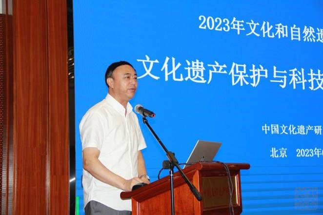
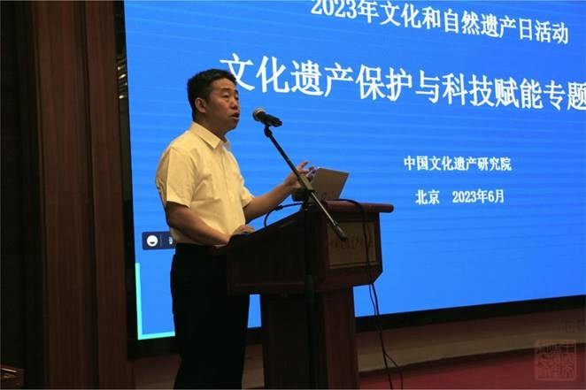
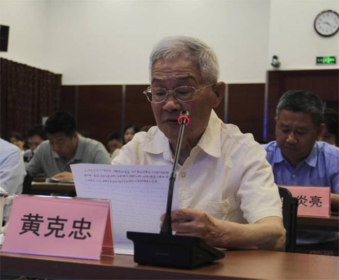
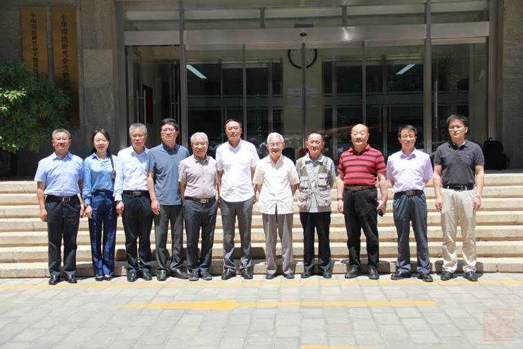
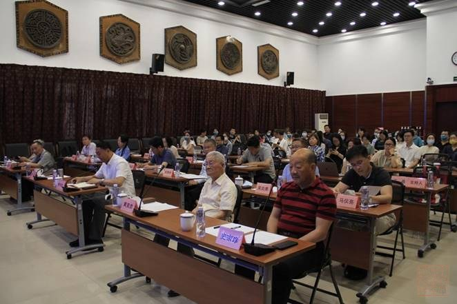

为深入开展学习贯彻习近平新时代中国特色社会主义思想主题教育，落实全国文物工作会议精神,6月6日，我院召开了2023年文化和自然遗产日活动“文化遗产保护与科技赋能专题论坛”，邀请相关专家学者分享经验、探讨问题。论坛分为三个专题，全院人员以线上、线下方式参与。
我院副院长李向东在致辞中表示，文研院作为国家文物保护领域具有重要影响力的科研机构，积极践行文物保护初心，以“立足北京、辐射全国、走向世界”为发展战略，不断拓展业务领域。接下来，文研院将以合作示范基地、科创中心建设、亚洲文化遗产保护联盟秘书处等契机，与各家单位强强联合，积极探索新时代文化遗产保护利用新路径，为文化强国建设贡献智慧和力量，希望本次论坛能够为文物在新时代焕发新生机提供借鉴与思考。

李向东副院长致辞
国家文物局文物古迹司（世界文化遗产司）司长邓超从文物管理体系、全面系统化保护、中华民族文化标识及国家公园体系构建等角度，深入解读了党的二十大报告提出的“加大文物和文化遗产保护力度，加强城乡建设中历史文化保护传承，建好用好国家文化公园”相关要求与思考。

邓超司长致辞
北京世界华人文化研究院研究员、中国工笔画学会会员武海峰先生表示，七十多年的文物保护历程见证了科技进步对文物保护和利用的关键推动和引领作用，文物科技使我们的工作更贴近生活、参与生活，希望文物工作能够继续从社会、经济、环境等角度给国家和民众做出更大的贡献。

终身荣誉研究员黄克忠先生致辞
新时代文物工作方针专题
敦煌研究院副院长、研究员郭青林，中国文化遗产研究院研究员于冰，分别以“新时代文物工作方针下的敦煌石窟”“巨型文化遗产整体保护与活化利用——长城的挑战与探索”为题进行主旨发言，分享了在新时代文物工作方针指导下的文化遗产保护、研究工作。龙门石窟研究院院长史家珍研究员点评指出，敦煌研究院在石窟保护方面集合了全国力量，走在行业前沿；长城的保护利用工作，向我们展示了巨型遗产保护的不易和一系列积极的探索，值得行业借鉴。
文物保护与科技专题
中国科学院空天信息创新研究院研究员陈富龙，中国文化遗产研究院研究员赵云，分别以“遥感技术视角下文化遗产的今生往事”“中国世界文化遗产监测体系中的技术应用及其前景”为题进行主旨发言，分别从技术研究与提供者、技术使用者的角度分享了文物保护中科技的更新、应用与发展前景。北京市文物局王玉伟研究员点评指出，遥感技术的应用强有力地助力了文物保护与管理工作；十余年世界遗产的监测工作成果突出，特别是监测对防灾减灾起到了至关重要的作用，建议文博领域进一步加强相关交流沟通。
文化遗产活化利用专题
中国旅游研究院总统计师、所长马仪亮，浙江省古建筑设计研究院院长、研究员卢远征，中国文化遗产研究院研究员吴炎亮分别以“文化遗产旅游开发的需求侧表达”“传统村落保护与可持续发展的探索”“乡村振兴背景下的革命文物保护与利用”为题进行了主旨发言。中国文化遗产研究院吴加安研究员点评指出，“文化遗产旅游开发的需求侧表达”引发我们从需求方面进行深入思考，旅游有文化理解，遗产保护将历史与现在连接，对文物保护工作的方式、理念等提供了新的思考；村落的可持续发展案例更是阐述了古建筑保护中保留民族文化多样性的探索，以点到面分享了遗产保护与产业发展的相辅相成；革命文物保护利用的分享则是一个更新的话题，以革命为重点、以文物为载体，进一步激发了文博工作者的热情。

专家合影

论坛现场 |